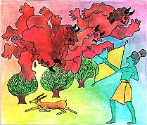
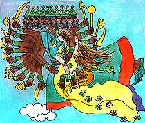

<html>
<!-- Mirrored from www.damodara.de/espaniol/html/jiva_tattva/Hanuman/Hanuman_05.htm by HTTrack Website Copier/3.x [XR&CO'2013], Sun, 23 Feb 2014 09:42:21 GMT -->
<head>
<title>El Rapto de la Princesa Sita</title>
<meta http-equiv="Content-Type" content="text/html; charset=iso-8859-1">
</head>

<body bgcolor="#FFFFFF" text="#000000">
<table width="45%" border="0" cellspacing="15" cellpadding="0" align="center" bordercolor="#FFFFFF" bgcolor="#FFFFFF" height="1329">
  <tr> 
    <td width="419" height="326" valign="top"> 
      <blockquote>
      <div align="center"> 
          <p align="center"><font face="Comic Sans MS"><o:p></o:p><font size="3" color="#0066FF">EL 
            RAPTO DE LA PRINCESA SITA</font></font></p>
          <p align="center"><font face="Comic Sans MS" size="3" color="#000000">Al 
            otro extremo del bosque, viv&iacute;a un apuesto pr&iacute;ncipe, 
            llamado Rama, y su bella e inteligente esposa, la princesa Sita.&nbsp; 
            Las noticias acerca de su belleza se difund&iacute;an a todo lo largo 
            y ancho del territorio.&nbsp;Al sur de la India, en una isla llamada 
            Lanka, viv&iacute;a un malvado y envidioso demonio, que ten&iacute;a 
            diez cabezas y veinte brazos, su nombre era Ravana. </font></p>
          <p align="center"><font face="Comic Sans MS" size="3" color="#000000">Yo 
            haré que Sita se case conmigo -alardeaba Ravana- ¡así tenga que robármela! 
            Ravana envió a sus malvados demonios 
            disfrazados como venados dorados, para distraer al príncipe Rama y 
            así hacer que éste partiera hacia el bosque de cazería tras los venados 
            alejándose de casa.</font><font face="Comic Sans MS" size="3" color="#000000"> 
            </font></p>
      </div>
	  </blockquote>
    </td>
  </tr>
  <tr> 
    <td valign="top" height="2"> 
      <div align="center">
        <p><a href="../../../images/galeria/colores/radha%20m%20gopal/index.html"></a></p>
        <p><font face="Comic Sans MS" color="#000000" size="2"><b>Rama Matando 
          a los demonios enviados por Rama</b></font></p>
      </div>
    </td>
  </tr>
  <tr> 
    <td height="410" valign="top"> 
      <blockquote> 
        <div align="center">
          <p><font face="Comic Sans MS" size="3" color="#000000">Tan pronto como Rama se fue, Ravana fue en 
            busca de Sita y con un aterrador ¡R-O-A-R-R-R! atrapó a Sita con sus 
            veinte brazos.  Su malvado plan era volver a Lanka y mantener a Sita 
            prisionera hasta que ella accediera a casarse con él. Pero Sita, al 
            momento de ser capturada,  se las arregló para quitarse las joyas 
            que tenía puestas tan rápido como pudo y las lanzó hacia el suelo, 
            mientras volaba por los aires atrapada en los brazos de Ravana. </font></p>
          <p><font size="3" color="#000000" face="Comic Sans MS">Espero, realmente 
            espero, que alguien encuentre estas joyas y se las de a mi esposo 
            Rama -Penso Sita-. Afortunadamente, las joyas cayeron justo donde 
            estaban Hanuman y Sugriva.</font></p>
          <p><font face="Comic Sans MS" size="3" color="#000000">&iexcl;Los dioses 
            deben estar envi&aacute;ndonos regalos!<br>
            -dijo Hanuman- &iquest;De qui&eacute;n ser&aacute;n estas joyas? -se 
            pregunt&oacute; Sugriva-. </font><font face="Comic Sans MS" size="3" color="#000000">Y 
            as&iacute; los dos amigos se internaron en el bosque para resolver 
            el misterio.</font></p>
        </div>
      </blockquote>
 
   </td>
  </tr>
  <tr> 
    <td height="173" valign="top"> 
      <div align="center"> </div>
      <div align="center">
        <p><a href="../../../images/galeria/colores/radha%20m%20gopal/index.html"></a></p>
        <p><font face="Comic Sans MS" size="2"><b>Ravana volando por los cielos 
          con Sita</b></font></p>
      </div>
    </td>
  </tr>
  <tr> 
    <td height="45" valign="top" bgcolor="#FFFFFF"> 
      <div align="center"><font face="Comic Sans MS"><a href="Hanuman_04.html"></a><a href="Hanuman.html"></a> 
        <a href="Hanuman_06.html"></a></font></div>
    </td>
  </tr>
</table>
<p>&nbsp;</p>
<p>&nbsp;</p>
</body>
<!-- Mirrored from www.damodara.de/espaniol/html/jiva_tattva/Hanuman/Hanuman_05.htm by HTTrack Website Copier/3.x [XR&CO'2013], Sun, 23 Feb 2014 09:42:22 GMT -->
</html>
